Yingqian Wang (王应谦)
Assistant Professor
Research Gate |
Github |
Google Scholar
National University of Defense Technology (NUDT)
Email: wangyingqian16@nudt.edu.cn
Brief Bio
I received my Ph.D. and Master degrees from NUDT in 2023 and 2018, respectively.
Before that, I received my B.E. degree from Shandong University in 2016.
Currently, I'm an assistant professor with the College of Electronic Science and Technology, NUDT.
My research interests focus on optical imaging and detection, particularly on
light field imaging and image super-resolution.
News
2023.11 | One paper on multi-frame infrared small target detection is accepted to IEEE TNNLS.
2023.09 | Four papers are selected as Highly Cited Papers in the latest issue of ESI Index.
2023.07 | Two papers on light field image super-resolution and pointly supervised infrared small target detection are accepted to ICCV 2023.
2023.02 | One paper on pointly supervised infrared small target detection is accepted to CVPR 2023.
2023.01 | We are organizing NTIRE Stereo Image SR Challenge and NTIRE LF Image SR Challenge at CVPR 2023.
2022.07 | Our paper "Dense Nested Attention Network for Infrared Small Target Detection" is accepted by IEEE TIP.
2022.07 | Our paper "Exploring Fine-Grained Sparsity in Convolutional Neural Networks for Efficient Inference" is accepted by IEEE TPAMI.
2022.03 | Two papers on network quantization and light field depth estimation are accepted to CVPR 2022.
2022.02 | Our paper "Disentangling Light Fields for Super-Resolution and Disparity Estimation" is accepted by IEEE TPAMI.
2022.01 | We are organizing NTIRE Stereo Image Super-Resolution Challenge at CVPR 2022.
2021.10 | Our paper "Dense Dual-Attention Network for Light Field Image Super-Resolution" is accepted by IEEE TCSVT. [pdf]
2021.10 | Our paper "Spatial-Angular Attention Network for Light Field Reconstruction" is accepted by IEEE TIP.
2021.07 | Our paper "Learning a Single Network for Scale-Arbitrary Super-Resolution" is accepted to ICCV 2021.
2021.03 | Two papers on single image super-resolution are accepted to CVPR 2021.
2020.11 | Our paper "Light Field Image Super-Resolution Using Deformable Convolution" is accepted by IEEE TIP.
2020.09 | An online tutorial (120 min in Chinese) regarding our Parallax Attention Mechanism is available here.
2020.09 | Our paper "Parallax Attention for Unsupervised Stereo Correspondence Learning" is accepted by IEEE TPAMI.
2020.07 | Our paper "Spatial-Angular Interaction for Light Field Image Super-Resolution" is accepted to ECCV 2020.
2019.12 | Our paper "DeOccNet: Learning to See Through Foreground Occlusions in Light Fields" is accepted to WACV 2020.
2019.03 | A large-scale dataset for stereo image super-resolution is available online at Flickr1024.
2019.02 | Our paper "Learning Parallax Attention for Stereo Image Super-Resolution" is accepted to CVPR 2019.
2023.09 | Four papers are selected as Highly Cited Papers in the latest issue of ESI Index.
2023.07 | Two papers on light field image super-resolution and pointly supervised infrared small target detection are accepted to ICCV 2023.
2023.02 | One paper on pointly supervised infrared small target detection is accepted to CVPR 2023.
2023.01 | We are organizing NTIRE Stereo Image SR Challenge and NTIRE LF Image SR Challenge at CVPR 2023.
2022.07 | Our paper "Dense Nested Attention Network for Infrared Small Target Detection" is accepted by IEEE TIP.
2022.07 | Our paper "Exploring Fine-Grained Sparsity in Convolutional Neural Networks for Efficient Inference" is accepted by IEEE TPAMI.
2022.03 | Two papers on network quantization and light field depth estimation are accepted to CVPR 2022.
2022.02 | Our paper "Disentangling Light Fields for Super-Resolution and Disparity Estimation" is accepted by IEEE TPAMI.
2022.01 | We are organizing NTIRE Stereo Image Super-Resolution Challenge at CVPR 2022.
2021.10 | Our paper "Dense Dual-Attention Network for Light Field Image Super-Resolution" is accepted by IEEE TCSVT. [pdf]
2021.10 | Our paper "Spatial-Angular Attention Network for Light Field Reconstruction" is accepted by IEEE TIP.
2021.07 | Our paper "Learning a Single Network for Scale-Arbitrary Super-Resolution" is accepted to ICCV 2021.
2021.03 | Two papers on single image super-resolution are accepted to CVPR 2021.
2020.11 | Our paper "Light Field Image Super-Resolution Using Deformable Convolution" is accepted by IEEE TIP.
2020.09 | An online tutorial (120 min in Chinese) regarding our Parallax Attention Mechanism is available here.
2020.09 | Our paper "Parallax Attention for Unsupervised Stereo Correspondence Learning" is accepted by IEEE TPAMI.
2020.07 | Our paper "Spatial-Angular Interaction for Light Field Image Super-Resolution" is accepted to ECCV 2020.
2019.12 | Our paper "DeOccNet: Learning to See Through Foreground Occlusions in Light Fields" is accepted to WACV 2020.
2019.03 | A large-scale dataset for stereo image super-resolution is available online at Flickr1024.
2019.02 | Our paper "Learning Parallax Attention for Stereo Image Super-Resolution" is accepted to CVPR 2019.
Publications --- 2023


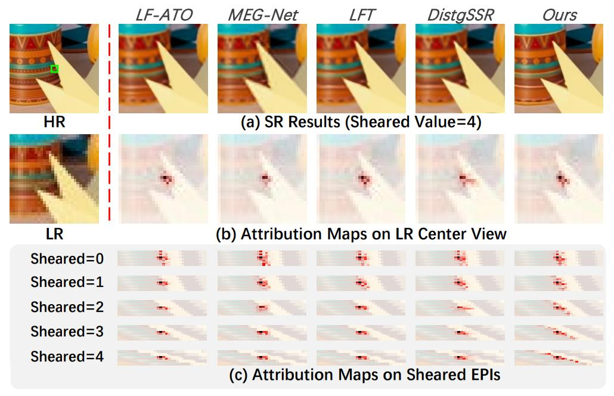
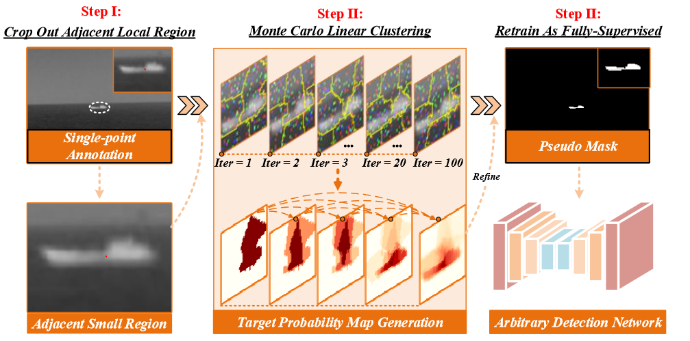
Real-World Light Field Image Super-Resolution via Degradation Modulation
Yingqian Wang, Zhengyu Liang, Longguang Wang, Jungang Yang, Wei An, Yulan Guo
arXiv, 2023.
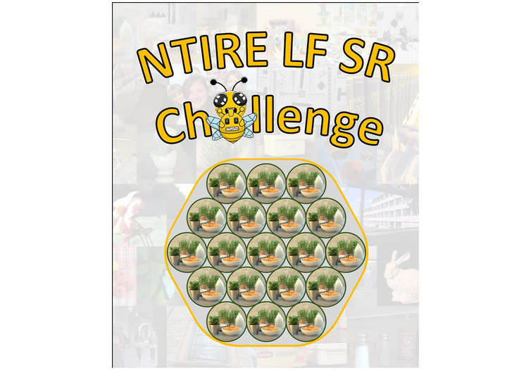
NTIRE 2023 Challenge on Light Field Image Super-Resolution: Dataset, Methods and Results
Yingqian Wang, Longguang Wang, Zhengyu Liang, Jungang Yang, Radu Timofte, Yulan Guo et al.
CVPRW, 2023.
Publications --- 2022

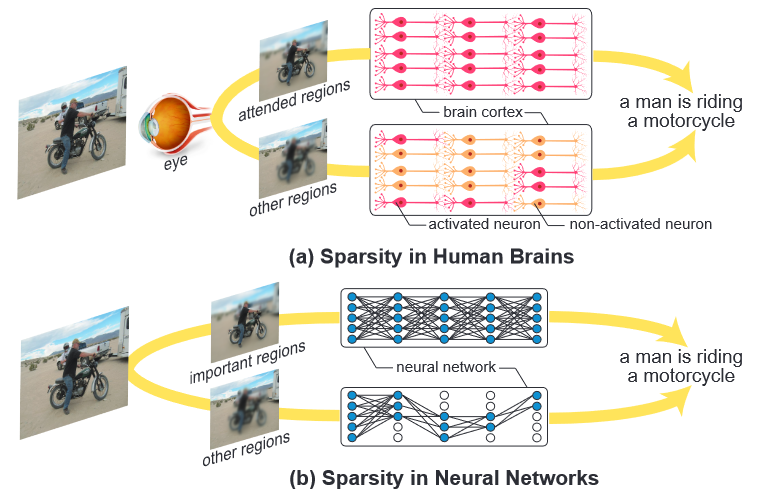
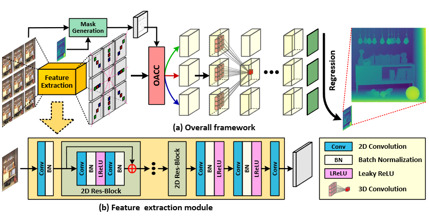
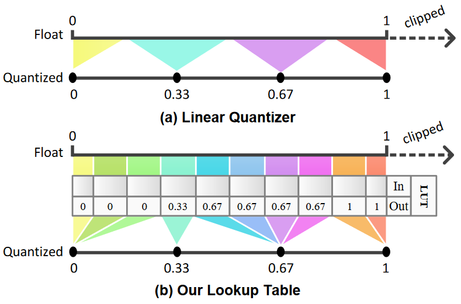
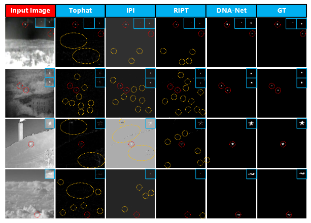
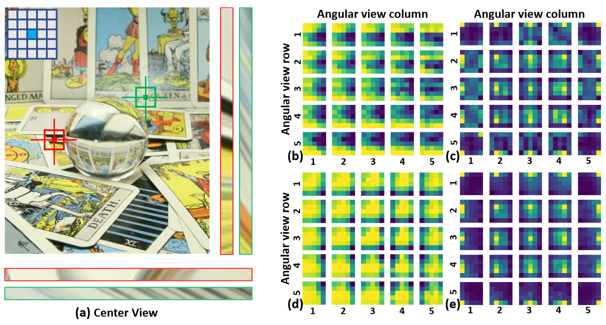
Publications --- 2021

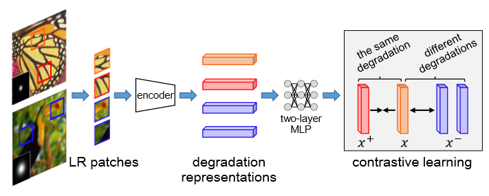
Unsupervised Degradation Representation Learning for Blind Super-Resolution
Longguang Wang, Yingqian Wang, Xiaoyu Dong, Qingyu Xu, Jungang Yang, Wei An, Yulan Guo
CVPR, 2021.
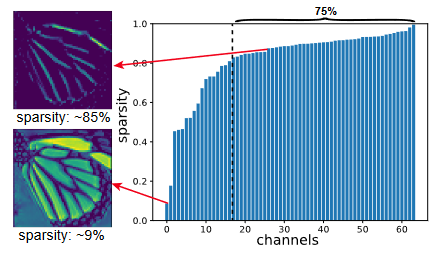
Exploring Sparsity in Image Super-Resolution for Efficient Inference
Longguang Wang, Xiaoyu Dong, Yingqian Wang, Xinyi Ying, Zaiping Lin, Wei An, Yulan Guo
CVPR, 2021.
Learning a Single Network for Scale-Arbitrary Super-Resolution
Longguang Wang, Yingqian Wang, Zaiping Lin, Jungang Yang, Wei An, Yulan Guo
ICCV, 2021.
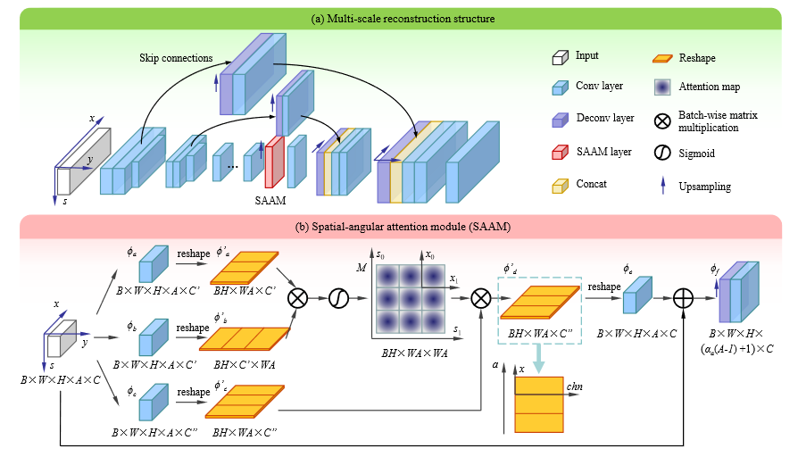
Spatial-Angular Attention Network for Light Field Reconstruction
Gaochang Wu, Yingqian Wang, Yebin Liu, Lu Fang, Tianyou Chai
IEEE TIP, 2021.
Publications --- 2020
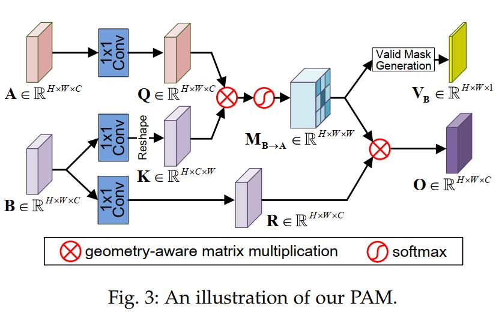
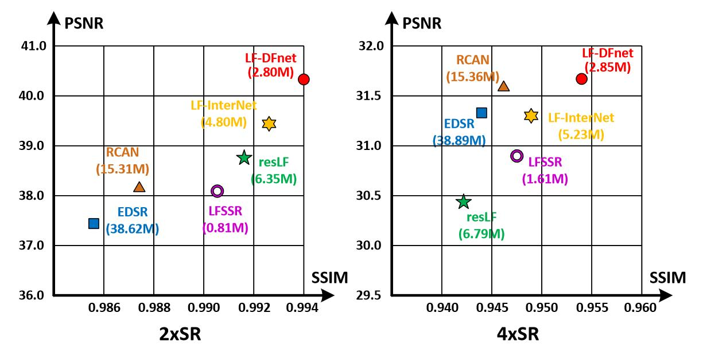
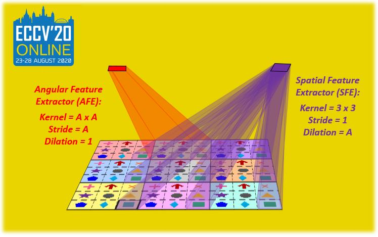
Spatial-Angular Interaction for Light Field Image Super-Resolution
Yingqian Wang, Longguang Wang, Jungang Yang, Wei An, Jingyi Yu, Yulan Guo
ECCV, 2020.
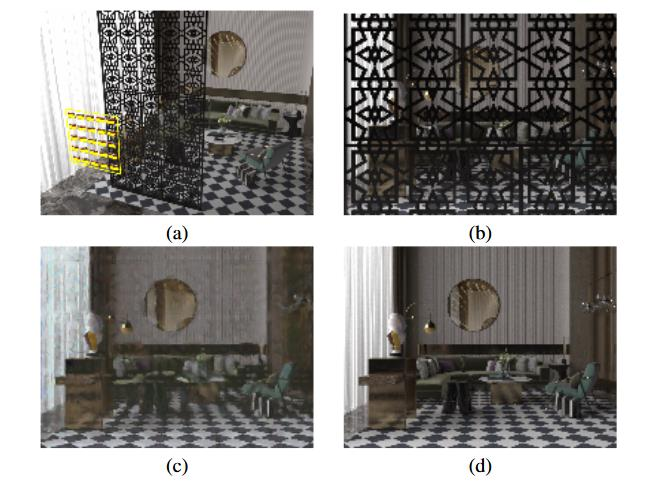
DeOccNet: Learning to See Through Foreground Occlusions in Light Fields
Yingqian Wang, Tianhao Wu, Jungang Yang, Longguang Wang, Wei An, Yulan Guo
WACV, 2020.
Publications --- 2019

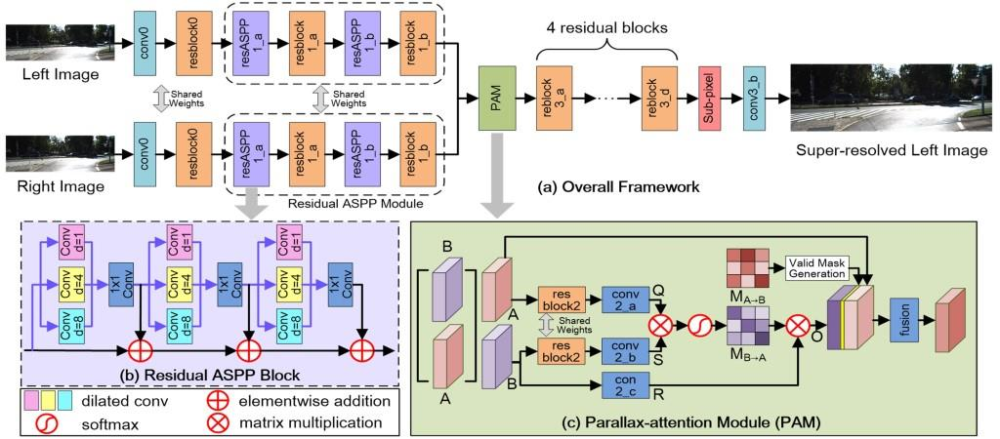
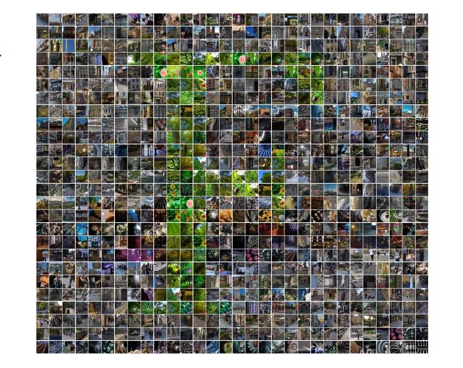
Academic Services
PC Members:
New Trends in Image Restoration and Enhancement (NTIRE) Wokshop @ CVPR 2023,
Advances in Image Manipulation (AIM) Workshop @ ECCV 2022,
New Trends in Image Restoration and Enhancement (NTIRE) Wokshop @ CVPR 2022,
Challenge Organization:
The 1st Light Field Image Super-Resolution Challenge @ NTIRE 2023,
The 2nd Stereo Image Super-Resolution Challenge @ NTIRE 2023,
The 1st Stereo Image Super-Resolution Challenge @ NTIRE 2022,
Conference Reviewer:
CVPR 2021, CVPR 2022, CVPR 2023, CVPR 2024
ECCV 2022
ICCV 2021, ICCV 2023
NeurIPS 2023
ICLR 2024
AAAI 2023, AAAI 2024
ACM MM 2021, ACM MM 2022, ACM MM 2023
......
Journal Reviewer:
International Journal of Computer Vision
IEEE Transactions on Image Processing
IEEE Transactions on Multimedia
IEEE Transactions on Circuits and Systems for Video Technology
IEEE Transactions on Computational Imaging
IEEE Transactions on Geoscience and Remote Sensing
IEEE Transactions on Broadcasting
IEEE Transactions on Instrumentation and Measurement
ISPRS Journal of Photogrammetry and Remote Sensing
International Journal of Applied Earth Observation and Geoinformation
Pattern Recognition Letters
Information Fusion
......
New Trends in Image Restoration and Enhancement (NTIRE) Wokshop @ CVPR 2023,
Advances in Image Manipulation (AIM) Workshop @ ECCV 2022,
New Trends in Image Restoration and Enhancement (NTIRE) Wokshop @ CVPR 2022,
Challenge Organization:
The 1st Light Field Image Super-Resolution Challenge @ NTIRE 2023,
The 2nd Stereo Image Super-Resolution Challenge @ NTIRE 2023,
The 1st Stereo Image Super-Resolution Challenge @ NTIRE 2022,
Conference Reviewer:
CVPR 2021, CVPR 2022, CVPR 2023, CVPR 2024
ECCV 2022
ICCV 2021, ICCV 2023
NeurIPS 2023
ICLR 2024
AAAI 2023, AAAI 2024
ACM MM 2021, ACM MM 2022, ACM MM 2023
......
Journal Reviewer:
International Journal of Computer Vision
IEEE Transactions on Image Processing
IEEE Transactions on Multimedia
IEEE Transactions on Circuits and Systems for Video Technology
IEEE Transactions on Computational Imaging
IEEE Transactions on Geoscience and Remote Sensing
IEEE Transactions on Broadcasting
IEEE Transactions on Instrumentation and Measurement
ISPRS Journal of Photogrammetry and Remote Sensing
International Journal of Applied Earth Observation and Geoinformation
Pattern Recognition Letters
Information Fusion
......
Teaching Assistance
Lecture: Optical Imaging and Detection (Spring Term, 2021)
Lecture: Optical Imaging and Detection (Autumn Term, 2020)
Lecture: Signals and Systems (Spring Term, 2020)
Lecture: Target Detection and Signal Processing (Autumn Term, 2019)
Lecture: Target Detection and Signal Processing (Autumn Term, 2018)
Lecture: Optical Imaging and Detection (Autumn Term, 2020)
Lecture: Signals and Systems (Spring Term, 2020)
Lecture: Target Detection and Signal Processing (Autumn Term, 2019)
Lecture: Target Detection and Signal Processing (Autumn Term, 2018)
Awards & Honors
2023 | Excellent Doctoral Graduates of NUDT (5 over 228)
2022 | First-class Scholarship of NUDT
2021 | Outstanding Master Dissertation Award of Hunan Province
2018 | Guanghua Scholarship
2016 | Excellent Graduates of Shandong Province
2015 | The 1st Prize in the Final of China Mathematics Competitions (45 winners over 63K participants, Top 0.07%)
2015 | National Scholarship (Ministry of Education, Top 2%)
2014 | National Scholarship (Ministry of Education, Top 2%)
2013 | National Scholarship (Ministry of Education, Top 2%)
2022 | First-class Scholarship of NUDT
2021 | Outstanding Master Dissertation Award of Hunan Province
2018 | Guanghua Scholarship
2016 | Excellent Graduates of Shandong Province
2015 | The 1st Prize in the Final of China Mathematics Competitions (45 winners over 63K participants, Top 0.07%)
2015 | National Scholarship (Ministry of Education, Top 2%)
2014 | National Scholarship (Ministry of Education, Top 2%)
2013 | National Scholarship (Ministry of Education, Top 2%)

Last updated: 2023-07-23